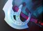

Сильні сторони
- Високий лейт-потенціал.
- Дуже мобільна завдяки Haunt.
- Можливість знаходити слабкі місця ворогів.
Слабкі сторони
- Слабкий старт гри.
- Залежність від предметів.
- Може страждати від героїв з AoE пошкодженням.
Контрпіки
- Timbersaw - високий захист і AoE.
- Legion Commander - дуель на ранніх етапах.
- Zeus - глобальний магічний урон.

Стиль гри
Початковий закуп:
- Tango
 Quelling Blade
Quelling Blade- Slippers of Agility
Лайнинг:
Працюйте з підтримкою, яка може створити безпечні умови для фарму. Найкращі саппорти: Ogre Magi, Lich, Warlock. Уникайте агресивної гри.
Мідгейм:
У цей період слід сконцентруватися на швидкому фармі ключових предметів: Radiance та  Manta Style. Використовуйте Haunt, щоб підключатися до боїв, коли це вигідно.
Лейтгейм:
Ставайте центром команди, добудовуючи предмети як Heart of Tarrasque,  Abyssal Blade, та Butterfly. Використовуйте свою витривалість і мобільність для домінації.
Abyssal Blade, та Butterfly. Використовуйте свою витривалість і мобільність для домінації.